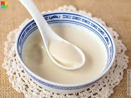

Soy Beancurd

Description
Soy milk tastes incredibly fresh and clean, and soy pudding is nothing more than soy milk which has been gelled just enough to barely hold it together. It's delicate, with a creamy melt-in-your-mouth texture.
Ingredients
- 3cups Soy milk
- 2+1/2tsp Gelatin
- Sugar (to your liking)
- 1tsp Vanilla extract
Steps
- Place 1 1/2 cups soy milk in a medium saucepan. Sprinkle gelatin over top and let sit 5 minutes to allow gelatin to soften.
- Heat soy milk over medium heat, stirring, just until gelatin dissolves (do not boil soy milk). Stir in remaining 1 1/2 cups soy milk and vanilla. Sweeten to taste. Pour into serving bowls and chill until set and very cold, 3 to 4 hours.
Source
Take me back!